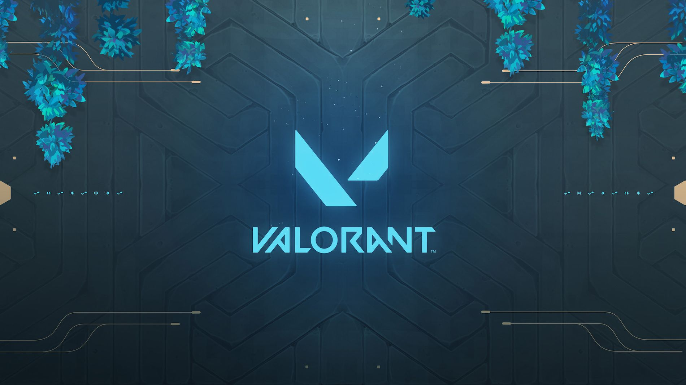

Valorant es un juego de ordenador multijugador en línea producido por Riot Games . Es un juego de disparos en primera persona, que consta de dos equipos de cinco, donde un equipo ataca y el otro defiende. Los jugadores controlan personajes conocidos como "agentes", que tienen diferentes habilidades para usar durante el juego
Valorant presenta cuatro roles principales: duelistas, iniciadores, controladores y centinelas.
Duelistas: son asesinos autosuficientes que, gracias a sus habilidades y destrezas, suelen conseguir iniciar enfrentamientos y anotar muchos asesinatos.
Iniciadores: se centran en servirse de ángulos inusuales para ayudar a su equipo y adentrarse en territorios clave y alejar a los defensores.
Centinelas: son agentes expertos en defensa que pueden bloquear áreas y vigilar los flancos, tanto en rondas de ataque como en rondas de defensa.
Los smokers cumplen un papel muy importante en Valorant, tanto para defender zonas peligrosas, como para atacar los espacios y buscar que los rivales se expongan.
